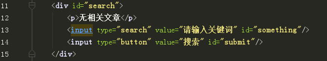
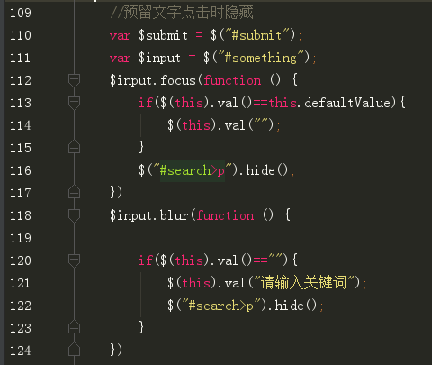
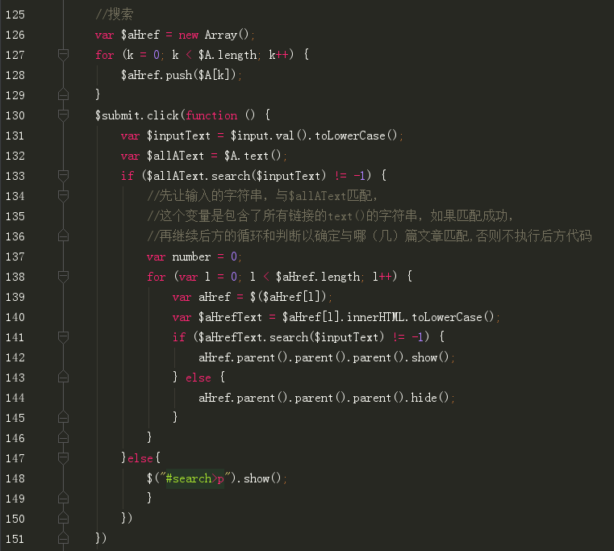
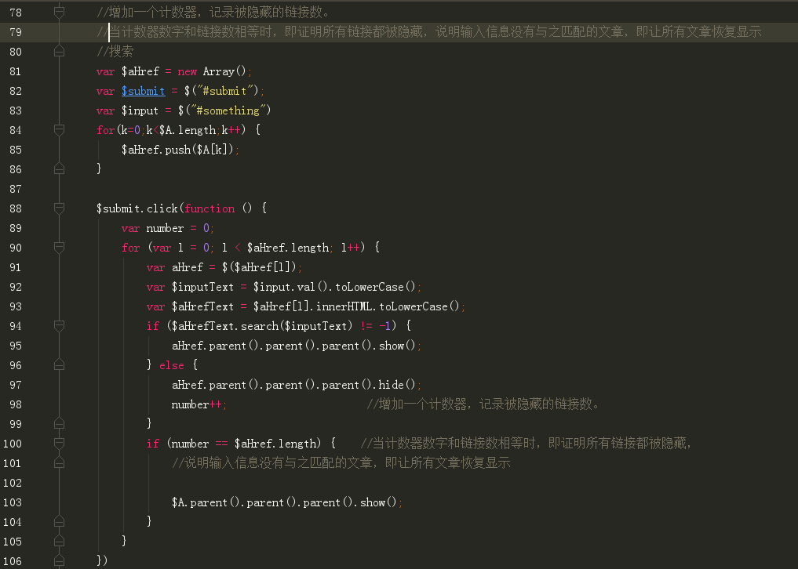

1.获取子节点
如果在UL中，想给其中的li改变style，却发现报错，有可能是因为子节点有空的文本节点，而文本节点无法设置style
children只包含元素节点
childNodes包含元素、文本、属性节点
offsetParent:获取定位的父节点
createDocumentFragment文档碎片，在高级浏览器中，基本不提高性能，甚至会降低，在低级浏览器中对性能有提高
用法：把原本需要循环10000次插入ul的10000个li元素，全部装到文档碎片中，最后再把文档碎片插入ul中
2.表单
tBodies[0] =document.getElementsByTagName("tbody")[0]
row[1] = document.getElementsByTagName("tr")[1] 行
cells[1] = document.getElementsByTagName("td")[1] 单元格
tBodies是数组，tHead和tFoot是元素，因为一个表格可以有很多body，但是只可以有一个表头和一个表尾
3.模糊搜索
search()方法——模糊搜索，返回搜索到的位置，搜索不到返回-1
效果
html代码
js代码
第一种实现方法
第二种实现方法
